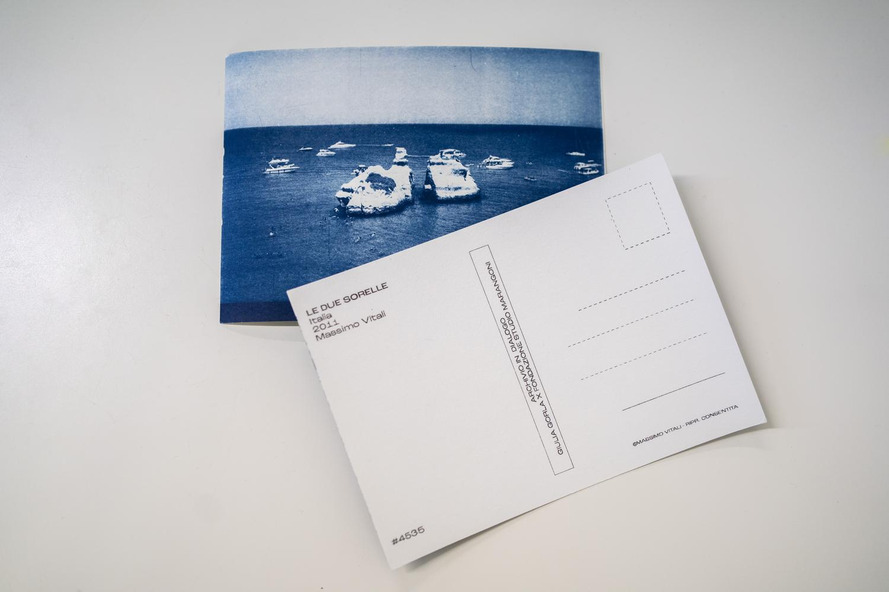
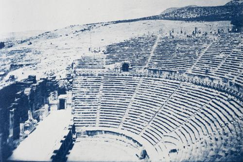
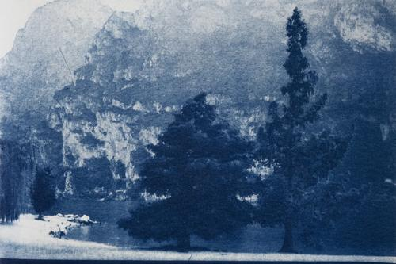
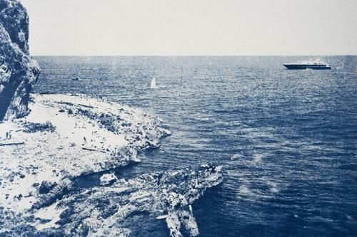
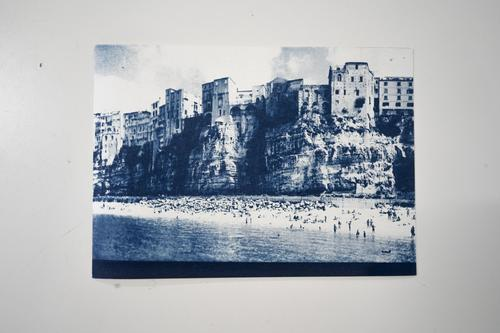
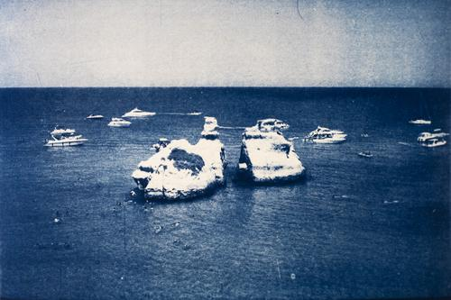
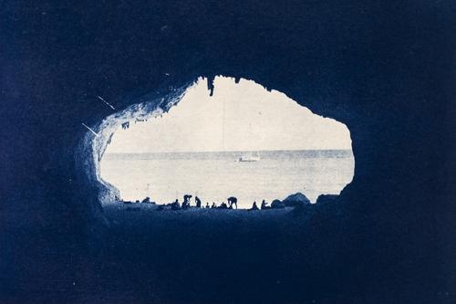
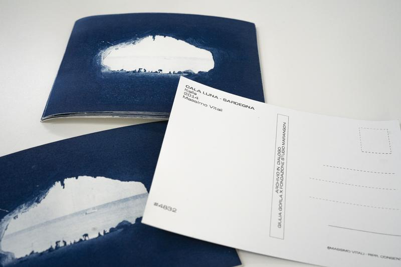
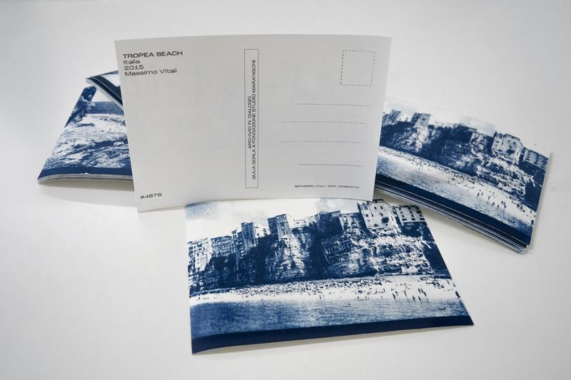

CARTOLINE D’ARCHIVIO
- ARCHIVIO IN DIALOGO M.VITALI
Il progetto nasce come riflessione a seguito dell’ incontro con il fotografo Massimo Vitali, all’interno del suo studio, per il progetto “Archivio in dialogo” promosso dalla Fondazione Studio Marangoni di Firenze.
Durante la visita è emersa, da parte del fotografo, l’esigenza di esprimere quella che è la problematica del deterioramento delle fotografie stampate - con il passare del tempo - e della perdita del loro valore “monetario” se stampate e non valorizzate come tali.
Da questo pensiero, si sviluppa la mia idea di utilizzare le stesse immagini presenti all’interno dell’archivio di Vitali, realizzandone una copia analogica con la tecnica della cianotipia. La scelta di questa specifica tecnica è dovuta appositamente per la sua colorazione - il ciano - colore che lo stesso fotografo indicava come difficilmente tendente a scomparire durante il deterioramento nel corso degli anni. L’idea di realizzare le cartoline e quindi la successiva selezione dei soggetti ristampati è invece dettata dal ricordo che le fotografie di Vitali hanno suscitato nel mio immaginario personale. Scene e scorci molto simili alle cartoline che da bambina inviavo ai miei nonni durante i periodi di vacanze. Dalle vecchie cartoline anni ‘90 ho tratto l’ispirazione per la grafica realizzata sul retro delle immagini stampate singolarmente.








